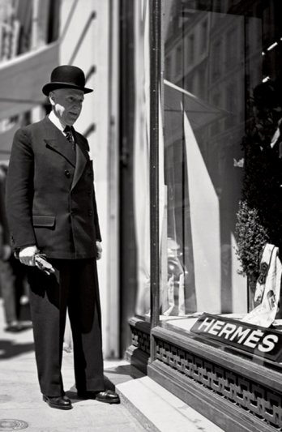

에르메스 가(家)는 이런 변화에 대해서 아주 많은 고민을 하게 되었다. 1차 세계대전이 끝난 직후인 1920년대 유럽에서도 대량생산방식을 더 이상 미룰 수 없게 되었다. 유럽에서도 본격적으로 자동차가 대중화되기 시작하면서 에르메스의 고민은 점점 더 깊어져 간다. 귀족들을 위한 수제마구전문용품을 생산하던 에르메스는 과연 대량생산방식에 맞추어 자신의 상품을 맞추어야 할지 아니면 귀족들을 위한 소수를 위한 상품으로 남을 것인가? 창업자인 티에리 에르메스의 손자인 에밀 에르메스는 가업을 이어가면서 아마 에르메스 역사상 가장 어려운 고민이면서 위대한 결정을 이 시기에 하게 된다. 세상은 분명이 대량생산체제로 모든 공산품을 생산하게 될 것이다.

Emile Hermes(1871-1951)

산업혁명이전 모든 물품을 직접 수공업을 통해서 생산해내던 인간들의 생산방식은 비록 소량 생산이었지만 누가 생산했었는지 그리고 어떻게 만들어 졌는지를 알 수가 있었다. 즉, 생산된 물품을 소비 할 때 마다 만든 장인의 따뜻한 정신을 느끼면서 소비할 수 있었던 것이다. 마치 사람들이 최소한 하나의 물건쯤은 추억이 가득 담긴 물건을 가지고 있듯이 말이다. 그러나 대량생산 체제로 서서히 자리 잡음으로서 누가 생산했는지 어떻게 생산했는지는 전혀 중요하지 않고 오로지 내가 구매할 수 있는지가 중요한 관점으로 자리 잡게 되었다. 즉, 물품의 면면에 흐르고 있던 따뜻한 정과 장인의 철학은 컨베이어 벨트에 묻혀 버리게 된 것이다.
에밀 에르메스는 생각했다. “이렇게 가다간 더 이상 마구상의 미래는 없어지게 될 것이다. 대량 생산은 피할 수 없는 역사적 필연성이지만 소량 생산이 가지는 절대적인 경쟁력인 희소성과 상품에 담긴 고유한 철학과 장인들의 따뜻한 손길은 분명히 영원한 가치를 가질 것이라는 것을 확신한다.”
이처럼 에르메스가 영원이 가지고 싶었던 것은 바로 장인 정신이었다. 에르메스의 정신은 에르메스의 대표상품인 버킨백의 제작과정에서도 쉽게 나타난다. 1명의 장인이 1개의 버킨백을 만들어 내는데는 무려 18시간이 필요하다라는 것이다. 더우기 수선을 맡기게 될 경우 제품을 직접 만든 장인이 직접 수리를 해주기로 유명하다.
에르메스의 장인 정신은 여기에서 끝나지 않는다. 비록 실력이 뛰어난 장인이 만든 제품일지라도 장인의 이름을 겉으로 내세우지 않는다 내세우는 것은 오로지 에르메스 브랜드 뿐이다. 에르메스란 브랜드로 명품의 아우라(aura)를 형성하고 장인의 실력은 제품을 따라다니는 품질의 follower가 될 뿐이다. "고객은 주인이며 장인은 그 그림자"라는 에르메스의 정신을 단적으로 나타내는 대표적인 말이다.
|